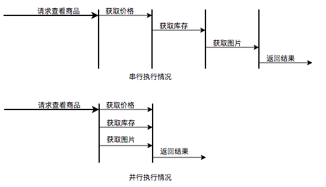
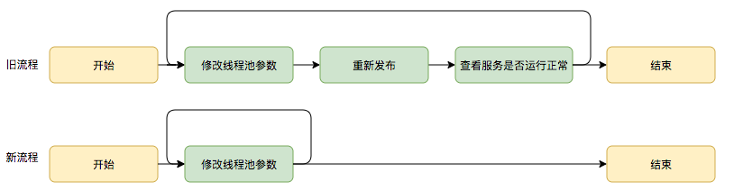

基础知识
线程池解决的问题
在并发环境下，系统不能够确定在任意时刻中，有多少任务需要执行，有多少资源需要投入。这种不确定性将带来以下若干问题：
- 频繁申请/销毁资源和调度资源，将带来额外的消耗，可能会非常巨大。
- 对资源无限申请缺少抑制手段，易引发系统资源耗尽的风险。
- 系统无法合理管理内部的资源分布，会降低系统的稳定性。
为解决资源分配这个问题，线程池采用了“池化”（Pooling）思想。池化，顾名思义，是为了最大化收益并最小化风险，而将资源统一在一起管理的一种思想。
线程池的好处
使用线程池可以带来一系列好处：
- 降低资源消耗：通过池化技术重复利用已创建的线程，降低线程创建和销毁造成的损耗。
- 提高响应速度：任务到达时，无需等待线程创建即可立即执行。
- 提高线程的可管理性：线程是稀缺资源，如果无限制创建，不仅会消耗系统资源，还会因为线程的不合理分布导致资源调度失衡，降低系统的稳定性。使用线程池可以进行统一的分配、调优和监控。
- 提供更多更强大的功能：线程池具备可拓展性，允许开发人员向其中增加更多的功能。比如延时定时线程池ScheduledThreadPoolExecutor，就允许任务延期执行或定期执行。
创建线程池方式
- Exectors创建，不推荐
- 构造方法创建
线程池七大参数
线程池使用面临的核心的问题在于：线程池的参数并不好配置。
1 | public ThreadPoolExecutor(int corePoolSize, |
3 个最重要的参数：
corePoolSize：核心线程数
线程池维护的最小线程数量，核心线程创建后不会被回收（注意：设置allowCoreThreadTimeout=true后，空闲的核心线程超过存活时间也会被回收）。
大于核心线程数的线程，在空闲时间超过keepAliveTime后会被回收。
线程池刚创建时，里面没有一个线程，当调用 execute() 方法添加一个任务时，如果正在运行的线程数量小于corePoolSize，则马上创建新线程并运行这个任务。
maximumPoolSize：最大线程数
线程池允许创建的最大线程数量。
当添加一个任务时，核心线程数已满，线程池还没达到最大线程数，并且没有空闲线程，工作队列已满的情况下，创建一个新线程并执行。
workQueue：工作队列
存放待执行任务的队列：当提交的任务数超过核心线程数大小后，再提交的任务就存放在工作队列，任务调度时再从队列中取出任务。它仅仅用来存放被execute()方法提交的Runnable任务。工作队列实现了BlockingQueue接口。
JDK默认的工作队列有五种：
ArrayBlockingQueue 数组型阻塞队列：数组结构，初始化时传入大小，有界，FIFO，使用一个重入锁，默认使用非公平锁，入队和出队共用一个锁，互斥。
LinkedBlockingQueue 链表型阻塞队列：链表结构，默认初始化大小为Integer.MAX_VALUE，有界（近似无解），FIFO，使用两个重入锁分别控制元素的入队和出队，用Condition进行线程间的唤醒和等待。
SynchronousQueue 同步队列：容量为0，添加任务必须等待取出任务，这个队列相当于通道，不存储元素。
PriorityBlockingQueue 优先阻塞队列：无界，默认采用元素自然顺序升序排列。
DelayQueue 延时队列：无界，元素有过期时间，过期的元素才能被取出。
其余参数
keepAliveTime：空闲线程存活时间
当一个可被回收的线程的空闲时间大于keepAliveTime，就会被回收。
可被回收的线程：
设置allowCoreThreadTimeout=true的核心线程。
大于核心线程数的线程（非核心线程）。
unit：时间单位
keepAliveTime的时间单位：
TimeUnit.NANOSECONDS
TimeUnit.MICROSECONDS
TimeUnit.MILLISECONDS // 毫秒
TimeUnit.SECONDS
TimeUnit.MINUTES
TimeUnit.HOURS
TimeUnit.DAYS
threadFactory：线程工厂
创建线程的工厂，可以设定线程名、线程编号等。
handler：拒绝策略
当线程池线程数已满，并且工作队列达到限制，新提交的任务使用拒绝策略处理。可以自定义拒绝策略，拒绝策略需要实现RejectedExecutionHandler接口。
JDK默认的拒绝策略有四种：
AbortPolicy：丢弃任务并抛出RejectedExecutionException异常。
DiscardPolicy：丢弃任务，但是不抛出异常。可能导致无法发现系统的异常状态。
DiscardOldestPolicy：丢弃队列最前面的任务，然后重新提交被拒绝的任务。
CallerRunsPolicy：由调用线程处理该任务。
核心设计与实现
总体设计
ThreadPoolExecutor实现的顶层接口是Executor，顶层接口Executor提供了一种思想：将任务提交和任务执行进行解耦。用户无需关注如何创建线程，如何调度线程来执行任务，用户只需提供Runnable对象，将任务的运行逻辑提交到执行器(Executor)中，由Executor框架完成线程的调配和任务的执行部分。ExecutorService接口增加了一些能力：（1）扩充执行任务的能力，补充可以为一个或一批异步任务生成Future的方法；（2）提供了管控线程池的方法，比如停止线程池的运行。AbstractExecutorService则是上层的抽象类，将执行任务的流程串联了起来，保证下层的实现只需关注一个执行任务的方法即可。最下层的实现类ThreadPoolExecutor实现最复杂的运行部分，ThreadPoolExecutor将会一方面维护自身的生命周期，另一方面同时管理线程和任务，使两者良好的结合从而执行并行任务。
线程池运行流程
线程池在内部实际上构建了一个生产者消费者模型，将线程和任务两者解耦，并不直接关联，从而良好的缓冲任务，复用线程。
线程池的运行主要分成两部分：任务管理、线程管理。

任务管理
任务管理部分充当生产者的角色，当任务提交后，线程池会判断该任务后续的流转：
（1）直接申请线程执行该任务；
（2）缓冲到队列中等待线程执行；
（3）拒绝该任务。
线程管理
线程管理部分是消费者，它们被统一维护在线程池内，根据任务请求进行线程的分配，当线程执行完任务后则会继续获取新的任务去执行，最终当线程获取不到任务的时候，线程就会被回收。
线程池运行机制
按照以下三个部分去详细讲解线程池运行机制：
- 线程池如何维护自身状态。
- 线程池如何管理任务。
- 线程池如何管理线程。
生命周期管理
线程池运行的状态，并不是用户显式设置的，而是伴随着线程池的运行，由内部来维护。线程池内部使用一个变量维护两个值：运行状态(runState)和线程数量 (workerCount)。在具体实现中，线程池将运行状态(runState)、线程数量 (workerCount)两个关键参数的维护放在了一起，如下代码所示：
1 | private final AtomicInteger ctl = new AtomicInteger(ctlOf(RUNNING, 0)); |
ctl这个AtomicInteger类型，是对线程池的运行状态和线程池中有效线程的数量进行控制的一个字段， 它同时包含两部分的信息：线程池的运行状态 (runState) 和线程池内有效线程的数量 (workerCount)，高3位保存runState，低29位保存workerCount，两个变量之间互不干扰。
用一个变量去存储两个值，可避免在做相关决策时，出现不一致的情况，不必为了维护两者的一致，而占用锁资源。通过阅读线程池源代码也可以发现，经常出现要同时判断线程池运行状态和线程数量的情况。线程池也提供了若干方法去供用户获得线程池当前的运行状态、线程个数。这里都使用的是位运算的方式，相比于基本运算，速度也会快很多。
关于内部封装的获取生命周期状态、获取线程池线程数量的计算方法如以下代码所示：
1 | private static int runStateOf(int c) { return c & ~CAPACITY; } //计算当前运行状态 |
ThreadPoolExecutor的运行状态有5种，分别为：

其生命周期转换如下入所示：

任务执行机制
任务调度
任务调度是线程池的主要入口，当用户提交了一个任务，接下来这个任务将如何执行都是由这个阶段决定的。了解这部分就相当于了解了==线程池的核心运行机制==。
首先，所有任务的调度都是由execute方法完成的，这部分完成的工作是：检查现在线程池的运行状态、运行线程数、运行策略，决定接下来执行的流程，是直接申请线程执行，或是缓冲到队列中执行，亦或是直接拒绝该任务。其执行过程如下：
- 首先检测线程池运行状态，如果不是RUNNING，则直接拒绝，线程池要保证在RUNNING的状态下执行任务。
- 如果workerCount < corePoolSize，则创建并启动一个线程来执行新提交的任务。
- 如果workerCount >= corePoolSize，且线程池内的阻塞队列未满，则将任务添加到该阻塞队列中。
- 如果workerCount >= corePoolSize && workerCount < maximumPoolSize，且线程池内的阻塞队列已满，则创建并启动一个线程来执行新提交的任务。
- 如果workerCount >= maximumPoolSize，并且线程池内的阻塞队列已满, 则根据拒绝策略来处理该任务, 默认的处理方式是直接抛异常。

任务缓冲
任务缓冲模块是线程池能够管理任务的核心部分。线程池的本质是对任务和线程的管理，而做到这一点最关键的思想就是将任务和线程两者解耦，不让两者直接关联，才可以做后续的分配工作。线程池中是以生产者消费者模式，通过一个阻塞队列来实现的。阻塞队列缓存任务，工作线程从阻塞队列中获取任务。
阻塞队列(BlockingQueue)是一个支持两个附加操作的队列。这两个附加的操作是：在队列为空时，获取元素的线程会等待队列变为非空。当队列满时，存储元素的线程会等待队列可用。阻塞队列常用于生产者和消费者的场景，生产者是往队列里添加元素的线程，消费者是从队列里拿元素的线程。阻塞队列就是生产者存放元素的容器，而消费者也只从容器里拿元素。
下图中展示了线程1往阻塞队列中添加元素，而线程2从阻塞队列中移除元素：

使用不同的队列可以实现不一样的任务存取策略。在这里，我们可以再介绍下阻塞队列的成员：

任务申请
由上文的任务分配部分可知，任务的执行有两种可能：
一种是任务直接由新创建的线程执行。
另一种是任务进入任务队列，线程从任务队列中获取任务然后执行，执行完任务的空闲线程会再次去从队列中申请任务再去执行。
第一种情况仅出现在线程初始创建的时候，第二种是线程获取任务绝大多数的情况。线程需要从任务缓存模块中不断地取任务执行，帮助线程从阻塞队列中获取任务，实现线程管理模块和任务管理模块之间的通信。这部分策略由getTask方法实现，其执行流程如下图所示：

getTask这部分进行了多次判断，为的是控制线程的数量，使其符合线程池的状态。如果线程池现在不应该持有那么多线程，则会返回null值。工作线程Worker会不断接收新任务去执行，而当工作线程Worker接收不到任务的时候，就会开始被回收。
任务拒绝
任务拒绝模块是线程池的保护部分，线程池有一个最大的容量，当线程池的任务缓存队列已满，并且线程池中的线程数目达到maximumPoolSize时，就需要拒绝掉该任务，采取任务拒绝策略，保护线程池。
拒绝策略是一个接口，其设计如下：
1 | public interface RejectedExecutionHandler { |
用户可以通过实现这个接口去定制拒绝策略，也可以选择JDK提供的四种已有拒绝策略，其特点如下：

Worker线程管理
Worker线程
线程池为了掌握线程的状态并维护线程的生命周期，设计了线程池内的工作线程Worker。我们来看一下它的部分代码：
1 | private final class Worker extends AbstractQueuedSynchronizer implements Runnable{ |
Worker这个工作线程，实现了Runnable接口，并持有一个线程thread，一个初始化的任务firstTask。thread是在调用构造方法时通过ThreadFactory来创建的线程，可以用来执行任务；firstTask用它来保存传入的第一个任务，这个任务可以有也可以为null。
- 如果这个值是非空的，那么线程就会在启动初期立即执行这个任务，也就对应核心线程创建时的情况；
- 如果这个值是null，那么就需要创建一个线程去执行任务列表（workQueue）中的任务，也就是非核心线程的创建。
Worker执行任务的模型如下图所示：

线程池需要管理线程的生命周期，需要在线程长时间不运行的时候进行回收。线程池使用一张Hash表去持有线程的引用，这样可以通过添加引用、移除引用这样的操作来控制线程的生命周期。这个时候重要的就是如何判断线程是否在运行。
Worker是通过继承AQS，使用AQS来实现独占锁这个功能。没有使用可重入锁ReentrantLock，而是使用AQS，为的就是实现不可重入的特性去反应线程现在的执行状态。
1.lock方法一旦获取了独占锁，表示当前线程正在执行任务中。
2.如果正在执行任务，则不应该中断线程。
3.如果该线程现在不是独占锁的状态，也就是空闲的状态，说明它没有在处理任务，这时可以对该线程进行中断。 4.线程池在执行shutdown方法或tryTerminate方法时会调用interruptIdleWorkers方法来中断空闲的线程，interruptIdleWorkers方法会使用tryLock方法来判断线程池中的线程是否是空闲状态；如果线程是空闲状态则可以安全回收。
在线程回收过程中就使用到了这种特性，回收过程如下图所示：

Worker线程增加
增加线程是通过线程池中的addWorker方法，该方法的功能就是增加一个线程，该方法不考虑线程池是在哪个阶段增加的该线程，这个分配线程的策略是在上个步骤完成的，该步骤仅仅完成增加线程，并使它运行，最后返回是否成功这个结果。addWorker方法有两个参数：firstTask、core。firstTask参数用于指定新增的线程执行的第一个任务，该参数可以为空；core参数为true表示在新增线程时会判断当前活动线程数是否少于corePoolSize，false表示新增线程前需要判断当前活动线程数是否少于maximumPoolSize，其执行流程如下图所示：

Worker线程回收
线程池中线程的销毁依赖JVM自动的回收，线程池做的工作是根据当前线程池的状态维护一定数量的线程引用，防止这部分线程被JVM回收，当线程池决定哪些线程需要回收时，只需要将其引用消除即可。Worker被创建出来后，就会不断地进行轮询，然后获取任务去执行，核心线程可以无限等待获取任务，非核心线程要限时获取任务。当Worker无法获取到任务，也就是获取的任务为空时，循环会结束，Worker会主动消除自身在线程池内的引用。
1 | try { |
线程回收的工作是在processWorkerExit方法完成的。

事实上，在这个方法中，将线程引用移出线程池就已经结束了线程销毁的部分。但由于引起线程销毁的可能性有很多，线程池还要判断是什么引发了这次销毁，是否要改变线程池的现阶段状态，是否要根据新状态，重新分配线程。
Worker线程执行任务
在Worker类中的run方法调用了runWorker方法来执行任务，runWorker方法的执行过程如下：
1.while循环不断地通过getTask()方法获取任务。 2.getTask()方法从阻塞队列中取任务。 3.如果线程池正在停止，那么要保证当前线程是中断状态，否则要保证当前线程不是中断状态。 4.执行任务。 5.如果getTask结果为null则跳出循环，执行processWorkerExit()方法，销毁线程。
执行流程如下图所示：

问题思考
业务背景
场景1：快速响应用户请求
描述：用户发起的实时请求，服务追求响应时间。比如说用户要查看一个商品的信息，那么我们需要将商品维度的一系列信息如商品的价格、优惠、库存、图片等等聚合起来，展示给用户。
分析：从用户体验角度看，这个结果响应的越快越好，如果一个页面半天都刷不出，用户可能就放弃查看这个商品了。而面向用户的功能聚合通常非常复杂，伴随着调用与调用之间的级联、多级级联等情况，业务开发同学往往会选择使用线程池这种简单的方式，将调用封装成任务并行的执行，缩短总体响应时间。另外，使用线程池也是有考量的，这种场景最重要的就是获取最大的响应速度去满足用户，所以应该不设置队列去缓冲并发任务，调高corePoolSize和maxPoolSize去尽可能创造多的线程快速执行任务。

图12 并行执行任务提升任务响应速度
场景2：快速处理批量任务
描述：离线的大量计算任务，需要快速执行。比如说，统计某个报表，需要计算出全国各个门店中有哪些商品有某种属性，用于后续营销策略的分析，那么我们需要查询全国所有门店中的所有商品，并且记录具有某属性的商品，然后快速生成报表。
分析：这种场景需要执行大量的任务，我们也会希望任务执行的越快越好。这种情况下，也应该使用多线程策略，并行计算。但与响应速度优先的场景区别在于，这类场景任务量巨大，并不需要瞬时的完成，而是关注如何使用有限的资源，尽可能在单位时间内处理更多的任务，也就是吞吐量优先的问题。所以应该设置队列去缓冲并发任务，调整合适的corePoolSize去设置处理任务的线程数。在这里，设置的线程数过多可能还会引发线程上下文切换频繁的问题，也会降低处理任务的速度，降低吞吐量。

能否不用线程池?
业务中要使用线程池，而使用不当又会导致故障，那么我们怎样才能更好地使用线程池呢？针对这个问题，我们下面延展几个方向：
1. 能否不用线程池?
回到最初的问题，业务使用线程池是为了获取并发性，对于获取并发性，是否可以有什么其他的方案呢替代？我们尝试进行了一些其他方案的调研：

综合考虑，这些新的方案都能在某种情况下提升并行任务的性能，然而本次重点解决的问题是如何更简易、更安全地获得的并发性。另外，Actor模型的应用实际上甚少，只在Scala中使用广泛，协程框架在Java中维护的也不成熟。这三者现阶段都不是足够的易用，也并不能解决业务上现阶段的问题。
2. 追求参数设置合理性？
有没有一种计算公式，能够让开发同学很简易地计算出某种场景中的线程池应该是什么参数呢？
带着这样的疑问，我们调研了业界的一些线程池参数配置方案：

调研了以上业界方案后，我们并没有得出通用的线程池计算方式。并发任务的执行情况和任务类型相关，IO密集型和CPU密集型的任务运行起来的情况差异非常大，但这种占比是较难合理预估的，这导致很难有一个简单有效的通用公式帮我们直接计算出结果。
3. 线程池参数动态化？
尽管经过谨慎的评估，仍然不能够保证一次计算出来合适的参数，那么我们是否可以将修改线程池参数的成本降下来，这样至少可以发生故障的时候可以快速调整从而缩短故障恢复的时间呢？基于这个思考，我们是否可以将线程池的参数从代码中迁移到分布式配置中心上，实现线程池参数可动态配置和即时生效，线程池参数动态化前后的参数修改流程对比如下：

图16 动态修改线程池参数新旧流程对比
基于以上三个方向对比，我们可以看出参数动态化方向简单有效。